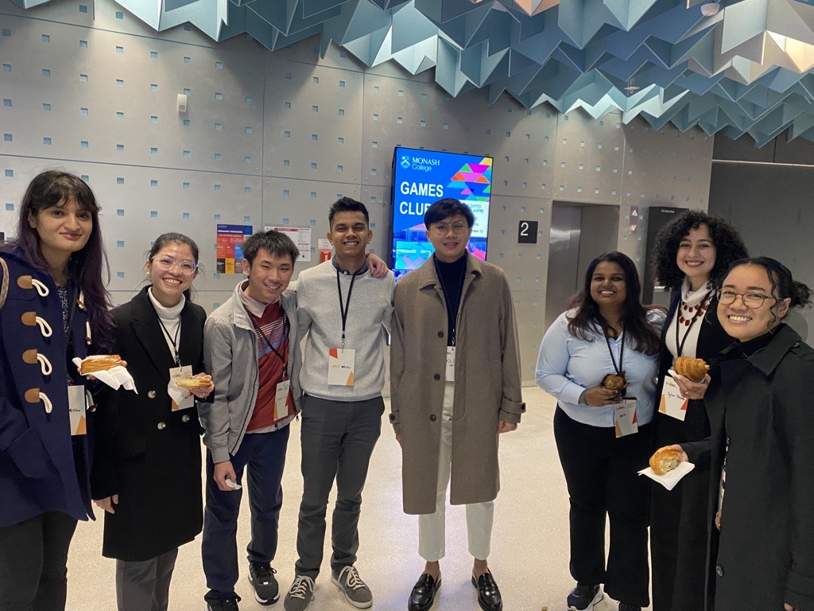
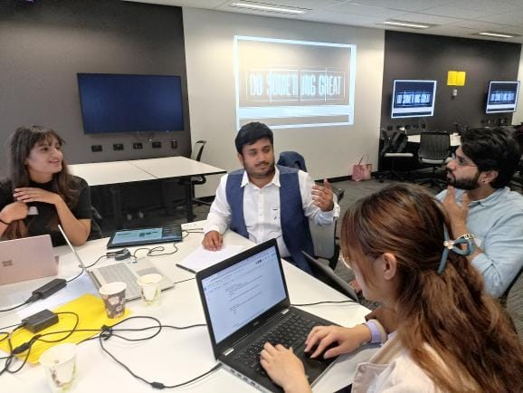
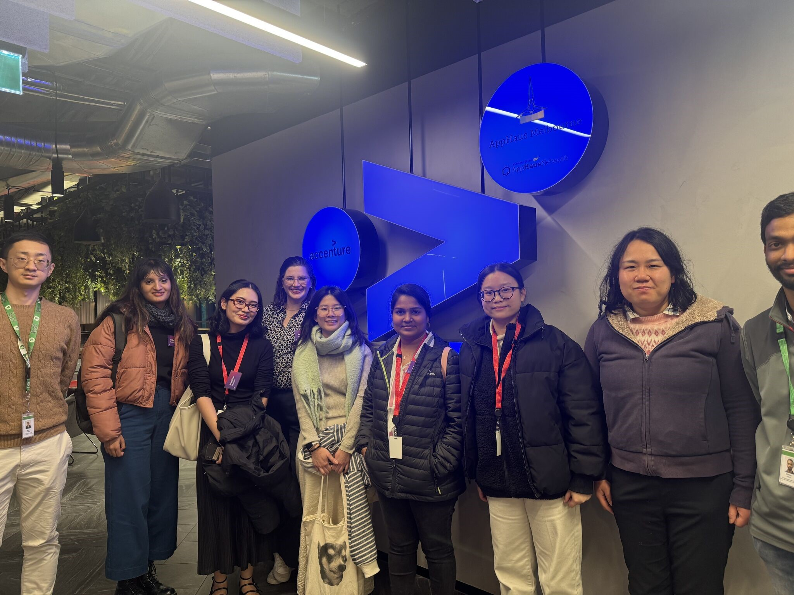
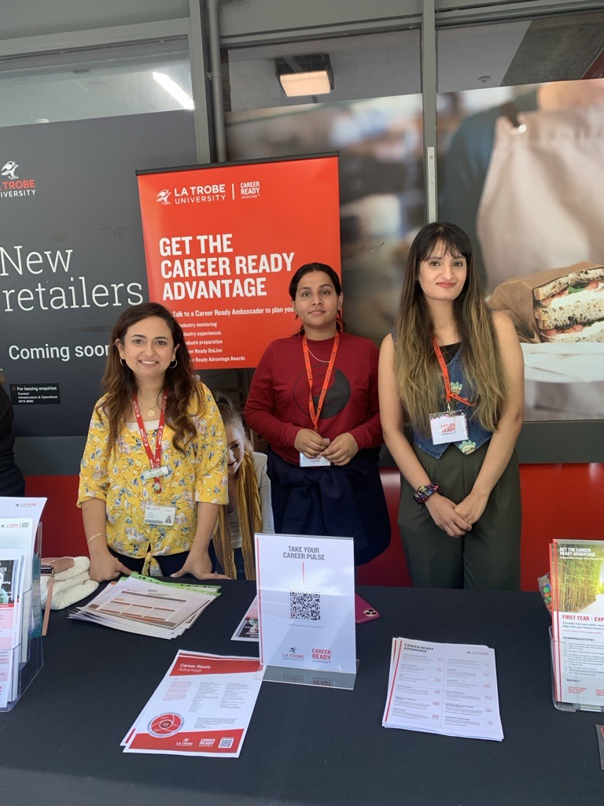
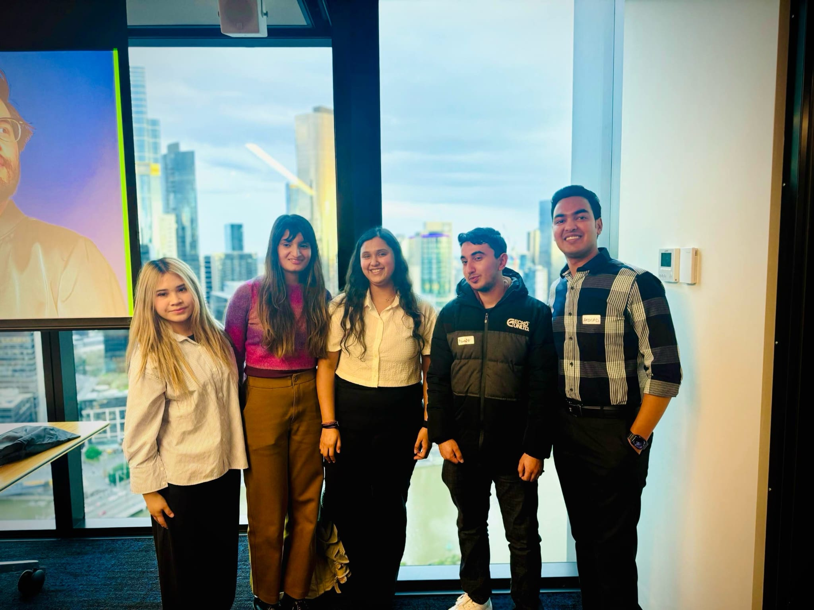

More About Me
Networking Event organized by Monash University
Hackathon organized by La Trobe University
Accenture Boot Camp
Volunteering at University
Won 2nd place at the ServiceNow x Deloitte Appathon
Peach Melba
.png)
Podcast
Beyond my academic and professional commitments, I am deeply engaged in various extracurricular activities that contribute significantly to my personal and professional growth. I love putting myself out there and actively participating in hackathons 🏆, bootcamps 🚀, and volunteering 🤝, where I gain hands-on experience with real-world projects and hone my leadership, teamwork, and communication skills. These experiences challenge me to think critically, solve complex problems, and collaborate effectively with diverse teams.
I am passionate about what I call the "4 C’s" 🎯:
- 🧐 Curiosity – A drive to continuously learn and explore new ideas.
- 🎨 Creativity – The ability to think outside the box and bring innovative solutions to life.
- 🤝 Collaboration – Working with others to achieve shared goals and share meaningful connections.
- 🌍 Community – Giving back, supporting others, and creating spaces where people can thrive.
When I’m not working on tech-related projects, I love spending time outdoors 🌿, staying fit 💪, and trying out new things!. I also run a personal project called Peach Melba , where I share my passion for baking by posting recipes for delicious baked goods on social media. This project allows me to express my creativity and connect with fellow baking enthusiasts! Additionally, I have launched my own podcast called Navigate with Peepy🎙️, focused on helping international students navigate life, careers, and mental health. I believe in using my experiences to support and inspire others, creating a positive impact wherever possible.
I’m always looking for opportunities to connect with like-minded individuals and collaborate on exciting projects. Feel free to reach out to me for potential job openings or collaborations! 🚀✨
Skills

Frontend Development
HTML, CSS, Bootstrap, Tailwind, JavaScript, jQuery, DOM, event listeners, and more.

Backend Development
Node.js, MongoDB, SQL, OOPS, express.js

Data Analysis
SQL, R, Python, Tableau, PowerBI, SAS Miner, Google Analytics, Machine Learning, Data Mining, Customer Segmentation, Data Warehouse, and more.
Project Management
Agile, Scrum, Kanban, JIRA, Trello, Git, GitHub, and more.
Business Anlysis
Agile, process modelling, use cases, user stories, acceptance criteria, BPMN A/B testing and more.